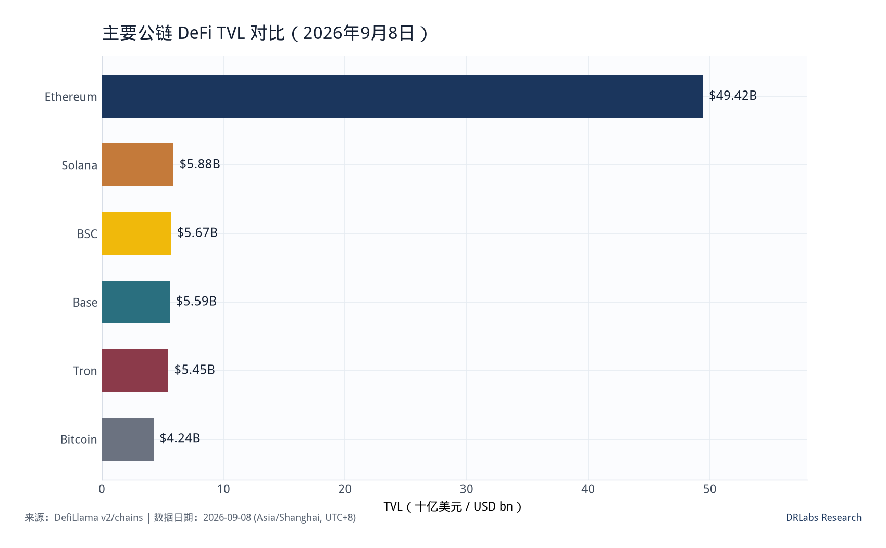
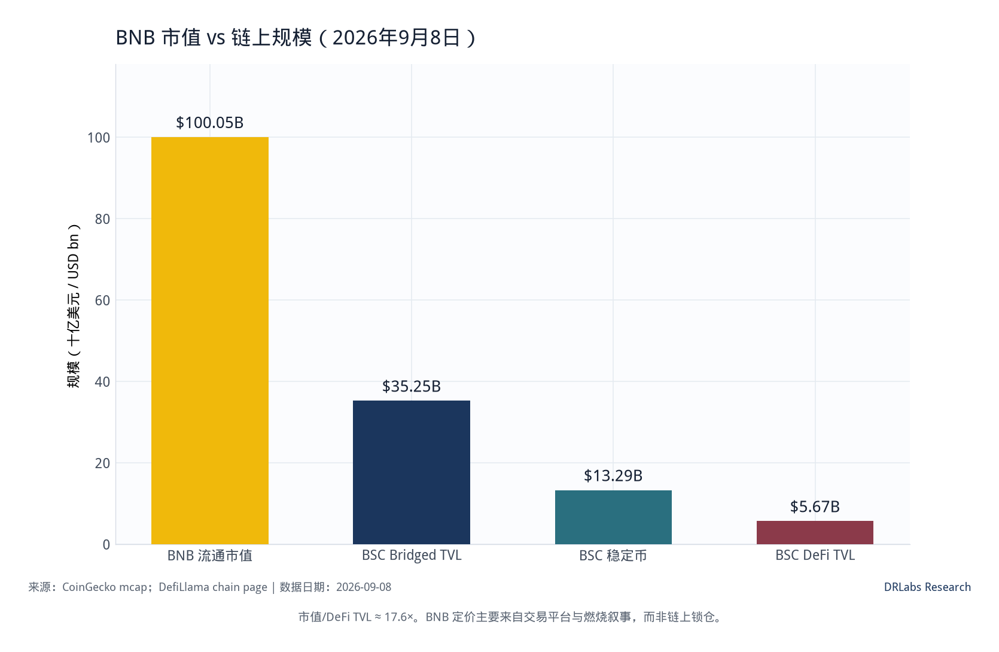
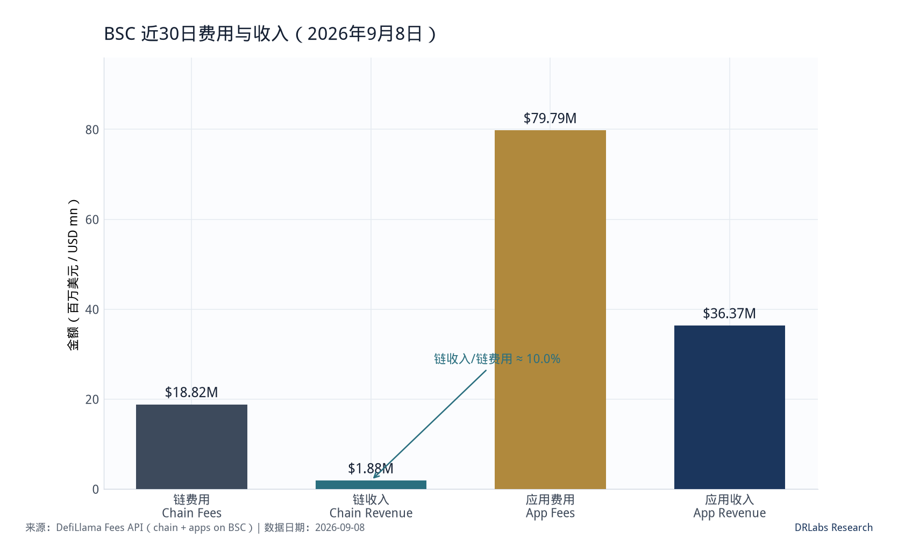
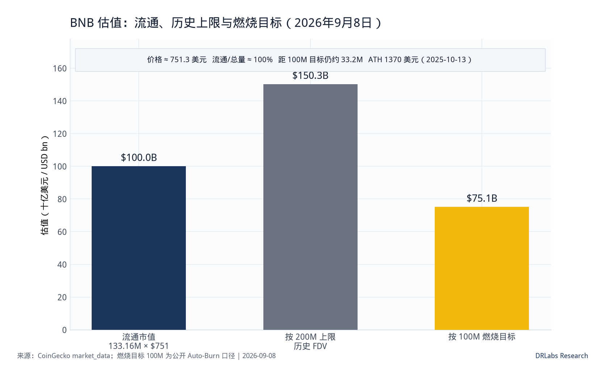
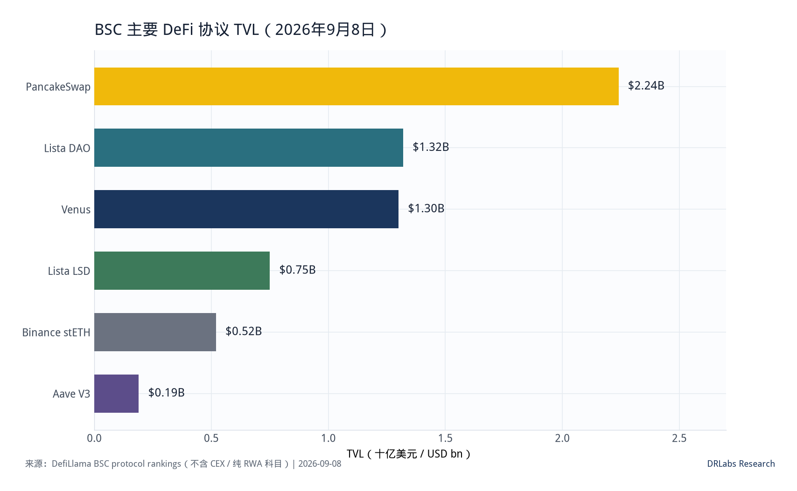
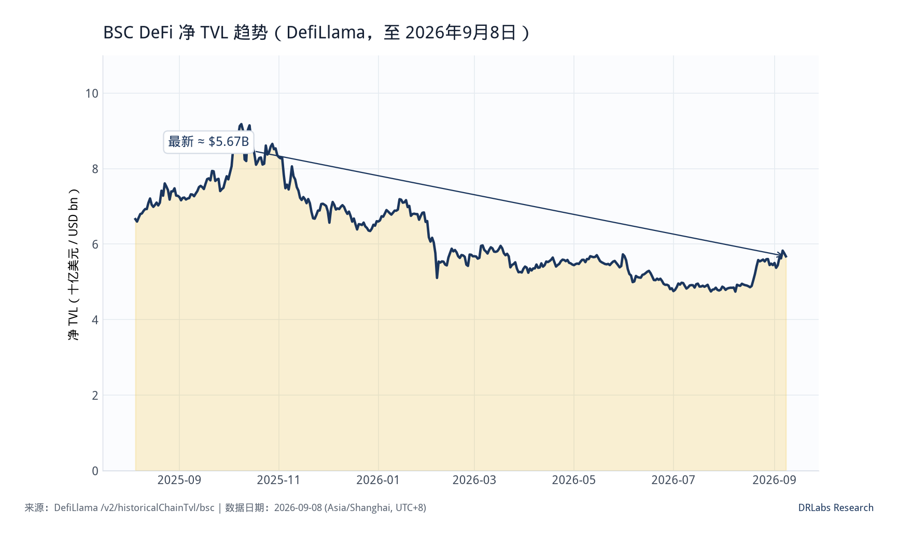
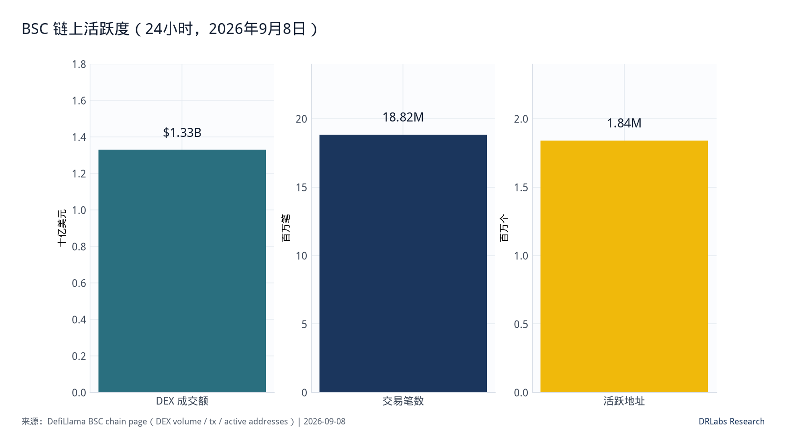

发布 / 数据日期：2026年9月8日 · BNB · 6.6 / 10Published / as-of: 8 Sep 2026 · BNB · 6.6 / 10公開 / 基準日：2026年9月8日 · BNB · 6.6 / 10게시 / 기준일: 2026년 9월 8일 · BNB · 6.6 / 10Publication : 8 sept. 2026 · BNB · 6.6 / 10Publicado: 8 sep 2026 · BNB · 6.6 / 10Публикация: 8 сен 2026 · BNB · 6.6 / 10
研究结论
Research takeaway
リサーチの要点
리서치 핵심 결론
Synthèse de recherche
Conclusión de la investigación
Ключевой вывод исследования
BNB 是交易平台代币与公链 Gas 资产的混合体。以 2026 年 9 月 8 日计，价格约 751 美元，流通市值约 1000 亿美元，位列加密资产第 4；流通量约 1.332 亿枚，与当前总量几乎重合。历史上限 2 亿枚仍写在资料里，公开 Auto-Burn 目标是压到 1 亿枚，距目标大约还要销毁 3320 万枚。
BNB is a hybrid of an exchange token and a public-chain gas asset. As of 8 September 2026, the price is about $751, circulating market cap about $100 billion, ranking 4th among crypto assets. Circulating supply is about 133.2 million, almost equal to current total supply. The historical 200 million cap is still in the docs; the public Auto-Burn target is 100 million, so about 33.2 million still need to be burned.
BNBは取引所トークンとパブリックチェーンのガス資産を兼ねたハイブリッドである。2026年9月8日時点、価格は約$751、流通時価総額は約$100 billion、暗号資産中第4位。流通供給量は約133.2 millionで、現行の総供給量とほぼ等しい。歴史的な200 million上限は依然として文書に残っており、公開されているAuto-Burnの目標は100 millionであるため、約33.2 millionがまだバーンされる必要がある。
BNB는 거래소 토큰과 퍼블릭 체인 가스 자산의 하이브리드이다. 2026년 9월 8일 기준 가격은 약 $751, 유통 시가총액은 약 $100 billion, 암호화 자산 중 4위이다. 유통량은 약 133.2 million으로 현재 총공급량과 거의 같다. 역사적 200 million 상한은 여전히 문서에 남아 있고, 공개 Auto-Burn 목표는 100 million이므로 약 33.2 million이 추가로 소각되어야 한다.
BNB est un hybride entre un jeton d'exchange et un actif de gas de chaîne publique. Au 8 septembre 2026, le prix s'établit autour de $751, capitalisation circulante d'environ $100 billion, au 4e rang des crypto-actifs. L'offre circulante est d'environ 133.2 million, presque égale à l'offre totale actuelle. Le plafond historique de 200 million figure encore dans la documentation ; la cible publique d'Auto-Burn est de 100 million, il reste donc environ 33.2 million à brûler.
BNB es un híbrido de token de exchange y activo de gas de cadena pública. Al 8 de septiembre de 2026, el precio es de unos $751, la capitalización de mercado circulante de unos $100 billion, en el 4.º puesto entre los criptoactivos. La oferta circulante es de unos 133.2 million, casi igual a la oferta total actual. El tope histórico de 200 million sigue en la documentación; el objetivo público de Auto-Burn es 100 million, de modo que aún hay que quemar unos 33.2 million.
BNB — гибрид биржевого токена и газового актива публичной сети. По состоянию на 8 сентября 2026 цена около $751, циркулирующая рыночная капитализация около $100 billion, 4-е место среди криптоактивов. Циркулирующее предложение около 133.2 million, почти равно текущему общему предложению. Исторический потолок 200 million по-прежнему указан в документации; публичная цель Auto-Burn — 100 million, поэтому ещё около 33.2 million предстоит сжечь.
链这一侧，DefiLlama 口径 BSC DeFi TVL 约 56.7 亿美元，排在 Ethereum、Solana 之后，略高于 Base 与 Tron。稳定币流通约 132.9 亿美元，24 小时 DEX 成交约 13.3 亿美元，交易约 1882 万笔、活跃地址约 184 万——吞吐和用户数仍然强。但把 1000 亿美元市值 拿去对 57 亿美元锁仓，倍数约 17.6×：定价主引擎是币安体系的分发、交易费折扣和燃烧，而不是链上存款规模。
On-chain, DefiLlama BSC DeFi TVL is about $5.67 billion, behind Ethereum and Solana, slightly above Base and Tron. Stablecoin float is about $13.29 billion, 24h DEX volume about $1.33 billion, ~18.82 million transactions and ~1.84 million active addresses — throughput and users remain strong. Mapping a $100 billion market cap onto $5.7 billion of deposits is about 17.6×: the pricing engine is Binance distribution, fee discounts and the burn, not on-chain deposits.
オンチェーンでは、DefiLlamaのBSC DeFi TVLは約$5.67 billionで、EthereumとSolanaに次ぎ、BaseとTronをわずかに上回る。ステーブルコイン残高は約$13.29 billion、24時間DEX出来高は約$1.33 billion、約18.82 million件のトランザクションと約1.84 millionのアクティブアドレス——スループットとユーザーは依然として強い。$100 billionの時価総額を$5.7 billionの預入に対応させると約17.6×：価格形成のエンジンはBinanceの流通、手数料割引、バーンであり、オンチェーン預入ではない。
온체인에서 DefiLlama BSC DeFi TVL은 약 $5.67 billion으로 Ethereum과 Solana에 이어 3위, Base와 Tron을 소폭 앞선다. 스테이블코인 플로트는 약 $13.29 billion, 24시간 DEX 거래량은 약 $1.33 billion, 거래 ~18.82 million건, 활성 주소 ~1.84 million — 처리량과 사용자 수는 여전히 강하다. $100 billion 시가총액을 $5.7 billion 예치금에 대응하면 약 17.6×: 가격 결정 엔진은 온체인 예치가 아니라 Binance 유통, 수수료 할인, 소각이다.
Côté on-chain, DefiLlama TVL DeFi BSC d'environ $5.67 billion, derrière Ethereum et Solana, légèrement au-dessus de Base et Tron. Le flottant de stablecoins est d'environ $13.29 billion, le volume DEX 24h d'environ $1.33 billion, ~18.82 million transactions et ~1.84 million adresses actives — le débit et les utilisateurs restent solides. Rapporter une capitalisation de $100 billion à $5.7 billion de dépôts donne environ 17.6× : le moteur de prix est la distribution Binance, les réductions de frais et le burn, pas les dépôts on-chain.
On-chain, DefiLlama sitúa el TVL DeFi de BSC en unos $5.67 billion, por detrás de Ethereum y Solana, ligeramente por encima de Base y Tron. El flotante de stablecoins es de unos $13.29 billion, el volumen DEX 24h de unos $1.33 billion, ~18.82 million transacciones y ~1.84 million direcciones activas: el throughput y los usuarios siguen siendo sólidos. Mapear una capitalización de $100 billion sobre $5.7 billion de depósitos da unos 17.6×: el motor de precios es la distribución de Binance, los descuentos en comisiones y la quema, no los depósitos on-chain.
Ончейн DefiLlama DeFi TVL BSC составляет около $5.67 billion, после Ethereum и Solana, чуть выше Base и Tron. Объём стейблкоинов около $13.29 billion, 24h объём DEX около $1.33 billion, ~18.82 million транзакций и ~1.84 million активных адресов — пропускная способность и пользователи остаются сильными. Сопоставление капитализации $100 billion с депозитами $5.7 billion даёт около 17.6×: ценовой двигатель — дистрибуция Binance, скидки на комиссии и сжигание, а не ончейн-депозиты.
近 30 日 BSC 链费用约 1882 万美元、链收入约 188 万美元，捕获率约 10%；应用层费用约 7980 万美元，明显高于链本身。PancakeSwap、Lista、Venus 仍是生态基本盘。
Over the last 30 days BSC chain fees were about $18.82 million and chain revenue about $1.88 million, a capture rate of about 10%. App-layer fees were about $79.79 million, well above the chain itself. PancakeSwap, Lista and Venus remain the ecosystem base.
直近30日間のBSCのチェーン手数料は約$18.82 million、チェーン収益は約$1.88 millionで、獲得率は約10%。アプリ層の手数料は約$79.79 millionで、チェーン自体を大きく上回る。PancakeSwap、Lista、Venusがエコシステムの基盤であり続けている。
최근 30일 BSC 체인 수수료는 약 $18.82 million, 체인 매출은 약 $1.88 million으로 캡처율은 약 10%이다. 앱 레이어 수수료는 약 $79.79 million으로 체인 자체를 크게 웃돈다. PancakeSwap, Lista, Venus가 여전히 생태계 기반이다.
Sur les 30 derniers jours, BSC frais de chaîne d'environ $18.82 million et revenus de chaîne d'environ $1.88 million, soit un taux de capture d'environ 10%. Les frais de la couche applicative s'élevaient à environ $79.79 million, bien au-dessus de la chaîne elle-même. PancakeSwap, Lista et Venus restent le socle de l'écosystème.
En los últimos 30 días, las comisiones de cadena de BSC fueron de unos $18.82 million y los ingresos de cadena de unos $1.88 million, una tasa de captura de unos 10%. Las comisiones de la capa de apps fueron de unos $79.79 million, muy por encima de la cadena misma. PancakeSwap, Lista y Venus siguen siendo la base del ecosistema.
За последние 30 дней комиссии сети BSC составили около $18.82 million, выручка сети — около $1.88 million, коэффициент захвата около 10%. Комиссии прикладного слоя около $79.79 million, заметно выше самой сети. PancakeSwap, Lista и Venus остаются базой экосистемы.
买入评分 6.6 / 10（谨慎跟踪）。 流动性与使用率给底部质量，估值与中心化验证人/监管敞口限制上修。本文不是买入建议。
Buy score 6.6 / 10 (cautious watch). Liquidity and usage set a quality floor; valuation plus validator/regulatory concentration cap the upside. This is not a buy recommendation.
買いスコア 6.6 / 10（慎重に注視）。 流動性と利用が品質の下限を支え、バリュエーションとバリデータ／規制の集中が上値を抑える。これは買い推奨ではない。
매수 점수 6.6 / 10 (신중 관찰). 유동성과 사용량이 품질 하한을 만들고, 밸류에이션과 검증인/규제 집중도가 상방을 제한한다. 본고는 매수 추천이 아니다.
Score d'achat 6.6 / 10 (suivi prudent). La liquidité et l'usage posent un plancher de qualité ; la valorisation plus la concentration des validateurs et du risque réglementaire plafonnent le potentiel. Ceci n'est pas une recommandation d'achat.
Puntuación de compra 6.6 / 10 (seguimiento cauteloso). La liquidez y el uso marcan un suelo de calidad; la valoración más la concentración de validadores/regulatoria limitan el alza. Esto no es una recomendación de compra.
Оценка покупки 6.6 / 10 (осторожное наблюдение). Ликвидность и использование задают качественный пол; оценка плюс концентрация валидаторов/регуляторные риски ограничивают апсайд. Это не рекомендация к покупке.
数据快照（2026-09-08）
Snapshot (2026-09-08)
スナップショット (2026-09-08)
스냅샷 (2026-09-08)
Instantané (2026-09-08)
Instantánea (2026-09-08)
Снимок (2026-09-08)
| 指标 Metric | 数值 Value | 口径 Source / definition |
|---|---|---|
| BNB 价格 BNB price | ≈ $751.3 | CoinGecko |
| 流通市值 / FDV（按现量） Circulating mcap / FDV (current supply) | ≈ $100.05B / $100.05B | 流通 ≈ 总量 Circulating ≈ total |
| 流通量 Circulating supply | ≈ 133.16M | CoinGecko |
| 历史上限 / 燃烧目标 Historical cap / burn target | 200M / 100M | 公开口径 Public disclosures |
| 距 ATH Distance from ATH | ATH $1,370（2025-10-13），约 −45% ATH $1,370 (2025-10-13), about −45% | CoinGecko |
| BSC DeFi TVL | ≈ $5.67B | DefiLlama v2/chains |
| BSC 稳定币 BSC stablecoins | ≈ $13.29B | Stablecoins API |
| Bridged TVL | ≈ $35.25B | DefiLlama chain page |
| 近 30 日链费用 / 链收入 30d chain fees / chain revenue | $18.82M / $1.88M | Fees API，category=Chain |
| 近 30 日应用费用 / 应用收入 30d app fees / app revenue | $79.79M / $36.37M | Fees API，apps on BSC |
| 24h DEX 成交 24h DEX volume | ≈ $1.33B | DefiLlama dexs |
| 24h 交易 / 活跃地址 24h tx / active addresses | 18.82M / 1.84M | chain page |
| PancakeSwap / Lista / Venus | ≈ $2.24B / $1.32B / $1.30B | BSC 协议榜 BSC protocol ranking |
数据时区 Asia/Shanghai（UTC+8）。CEX 钱包 TVL（如 Binance CEX 约 301 亿美元）不计入「公链 DeFi TVL」。Circle USYC 等 RWA 科目会出现在 BSC 协议榜，下文 DeFi 对比已尽量剥离纯 RWA / CEX。
Timezone Asia/Shanghai (UTC+8). CEX wallet TVL (e.g. Binance CEX ~$30.1B) is not counted as public-chain DeFi TVL. Circle USYC and other RWA line items appear on the BSC protocol ranking; DeFi comparisons below strip pure RWA / CEX where possible.
タイムゾーンはAsia/Shanghai (UTC+8)。CEXウォレットTVL（例：Binance CEX ~$30.1B）はパブリックチェーンのDeFi TVLとして計上しない。Circle USYCなどのRWA項目はBSCプロトコル順位に表示される。以下のDeFi比較では、可能な限り純粋なRWA / CEXを除外する。
타임존 Asia/Shanghai (UTC+8). CEX 지갑 TVL(예: Binance CEX ~$30.1B)은 퍼블릭 체인 DeFi TVL에 포함하지 않는다. Circle USYC 등 RWA 항목은 BSC 프로토콜 순위에 나타나며, 아래 DeFi 비교에서는 가능한 한 순수 RWA / CEX를 제외한다.
Fuseau horaire Asia/Shanghai (UTC+8). La TVL des wallets CEX (p. ex. Binance CEX ~$30.1B) n'est pas comptée comme TVL DeFi de chaîne publique. Circle USYC et d'autres lignes RWA apparaissent dans le classement des protocoles BSC ; les comparaisons DeFi ci-dessous excluent le RWA pur / CEX lorsque c'est possible.
Zona horaria Asia/Shanghai (UTC+8). El TVL de wallets CEX (p. ej. Binance CEX ~$30.1B) no se cuenta como TVL DeFi de cadena pública. Circle USYC y otras partidas RWA aparecen en el ranking de protocolos de BSC; las comparaciones DeFi posteriores excluyen RWA / CEX puros cuando es posible.
Часовой пояс Asia/Shanghai (UTC+8). TVL кошельков CEX (например, Binance CEX ~$30.1B) не учитывается как DeFi TVL публичной сети. Circle USYC и другие позиции RWA появляются в рейтинге протоколов BSC; сравнения DeFi ниже по возможности исключают чистые RWA / CEX.
公链位置：第三名，但领先优势很薄
Chain rank: third, with a thin lead
チェーン順位：第3位、僅差のリード
체인 순위: 3위, 리드 폭은 얇다
Rang de chaîne : troisième, avec une avance mince
Ranking de cadena: tercero, con una ventaja estrecha
Рейтинг сети: третье место, с тонким отрывом
Ethereum 仍以约 494 亿美元 TVL 单独一档。其后 Solana 58.8 亿、BSC 56.7 亿、Base 55.9 亿、Tron 54.5 亿 挤在同一量级。BSC 不再享有「ETH 之外的默认 EVM 侧链」溢价，而是和 Solana、Base 抢同一层用户与稳定币。对 BNB 持仓的含义是：链份额可以守住前五，但很难再单独支撑千亿美元估值的扩张。
Ethereum still sits alone at about $49.4 billion TVL. Then Solana $5.88B, BSC $5.67B, Base $5.59B and Tron $5.45B crowd the same band. BSC no longer owns a default “EVM sidechain besides ETH” premium; it competes with Solana and Base for the same users and stablecoins. For a BNB holder that means chain share can hold a top-five seat, but it is hard for the chain alone to underwrite another expansion of a $100B valuation.
Ethereumは依然として約$49.4 billionのTVLで単独首位。次いでSolana $5.88B、BSC $5.67B、Base $5.59B、Tron $5.45Bが同帯に密集する。BSCはもはや「ETH以外のEVMサイドチェーン」という既定のプレミアムを独占していない。同じユーザーとステーブルコインをSolanaおよびBaseと争っている。BNB保有者にとって、チェーンシェアはトップ5の座を維持しうるが、チェーン単体で$100Bバリュエーションの再拡大を裏付けることは難しい。
Ethereum은 여전히 약 $49.4 billion TVL로 단독 1위이다. 그다음 Solana $5.88B, BSC $5.67B, Base $5.59B, Tron $5.45B가 같은 밴드에 몰려 있다. BSC는 더 이상 「ETH 외 기본 EVM 사이드체인」 프리미엄을 독점하지 않으며, Solana·Base와 같은 사용자·스테이블코인을 놓고 경쟁한다. BNB 보유자 입장에서 체인 점유율은 상위 5위를 지킬 수 있지만, 체인만으로 $100B 밸류에이션의 추가 확장을 뒷받침하기는 어렵다.
Ethereum reste seul autour d'environ $49.4 billion de TVL. Puis Solana $5.88B, BSC $5.67B, Base $5.59B et Tron $5.45B se serrent dans la même bande. BSC ne détient plus une prime par défaut de « sidechain EVM hors ETH » ; elle concurrence Solana et Base pour les mêmes utilisateurs et stablecoins. Pour un détenteur de BNB, cela signifie que la part de chaîne peut conserver une place dans le top 5, mais il est difficile pour la chaîne seule de garantir une nouvelle expansion d'une valorisation de $100B.
Ethereum sigue solo en unos $49.4 billion de TVL. Luego Solana $5.88B, BSC $5.67B, Base $5.59B y Tron $5.45B se agrupan en la misma banda. BSC ya no posee una prima por defecto de “sidechain EVM además de ETH”; compite con Solana y Base por los mismos usuarios y stablecoins. Para un tenedor de BNB eso significa que la cuota de cadena puede conservar un puesto entre los cinco primeros, pero es difícil que la cadena sola respalde otra expansión de una valoración de $100B.
Ethereum по-прежнему стоит особняком при TVL около $49.4 billion. Далее Solana $5.88B, BSC $5.67B, Base $5.59B и Tron $5.45B теснятся в одной полосе. BSC больше не владеет премией «EVM-сайдчейн по умолчанию помимо ETH»; сеть конкурирует с Solana и Base за тех же пользователей и стейблкоинов. Для держателя BNB это значит, что доля сети может удерживать место в топ-5, но одной сети трудно обосновать очередное расширение оценки $100B.

市值与链上规模：错位是核心事实
Market cap vs on-chain scale: the mismatch is the core fact
時価総額とオンチェーン規模：乖離が核心事実
시가총액 대비 온체인 규모: 괴리가 핵심 사실
Capitalisation vs échelle on-chain : le décalage est le fait central
Capitalización vs escala on-chain: el desajuste es el hecho central
Капитализация против ончейн-масштаба: расхождение — ключевой факт
把 BNB 流通市值、跨链/桥接锁定、稳定币和 DeFi TVL 放在同一张图上，错位立刻出现：约 1000 亿美元 的币价体量，对应约 353 亿美元 Bridged TVL、133 亿美元 稳定币和 57 亿美元 DeFi 锁仓。市值/DeFi TVL 约 17.6×。这不是「锁仓不够」的简单贬义——BNB 本来就不是纯协议代币——但研究上必须写明：买 BNB 买的是平台+Gas+通缩，不是买一条 TVL 领先的 DeFi 链。
Put BNB circulating mcap, bridged locks, stablecoins and DeFi TVL on one chart and the mismatch is immediate: about $100 billion of token value against about $35.3 billion Bridged TVL, $13.3 billion stablecoins and $5.7 billion DeFi deposits. Mcap / DeFi TVL is about 17.6×. That is not a cheap jab that “TVL is too low” — BNB was never a pure protocol token — but research must say it plainly: buying BNB is buying platform + gas + deflation, not a TVL-leading DeFi chain.
BNBの流通時価総額、ブリッジロック、ステーブルコイン、DeFi TVLを1つのチャートに置くと、乖離は直ちに明らかになる。約$100 billionのトークン価値に対し、Bridged TVL約$35.3 billion、ステーブルコイン$13.3 billion、DeFi預入$5.7 billion。時価総額 / DeFi TVLは約17.6×。これは「TVLが低すぎる」という安易な批判ではない——BNBは純粋なプロトコルトークンではなかった——が、リサーチとしては明確に述べる必要がある。BNBを買うことは、プラットフォーム＋ガス＋デフレを買うことであり、TVL首位のDeFiチェーンを買うことではない。
BNB 유통 시가총액, 브릿지 락, 스테이블코인, DeFi TVL을 한 차트에 놓으면 괴리가 즉시 드러난다. 약 $100 billion의 토큰 가치 대비 Bridged TVL 약 $35.3 billion, 스테이블코인 $13.3 billion, DeFi 예치 $5.7 billion. 시가총액 / DeFi TVL은 약 17.6×. 「TVL이 너무 낮다」는 값싼 비아냥이 아니다 — BNB는 원래 순수 프로토콜 토큰이 아니었다 — 다만 리서치는 분명히 말해야 한다. BNB를 사는 것은 플랫폼 + 가스 + 디플레이션을 사는 것이지, TVL 선도 DeFi 체인을 사는 것이 아니다.
Placer la mcap circulante de BNB, les verrouillages bridgés, les stablecoins et la TVL DeFi sur un même graphique et le décalage est immédiat : environ $100 billion de valeur de jeton contre environ $35.3 billion de TVL bridgée, $13.3 billion de stablecoins et $5.7 billion de dépôts DeFi. Le ratio mcap / TVL DeFi est d'environ 17.6×. Ce n'est pas une pique facile du type « la TVL est trop basse » — BNB n'a jamais été un jeton de protocole pur — mais la recherche doit le dire clairement : acheter du BNB, c'est acheter plateforme + gas + déflation, pas une chaîne DeFi leader en TVL.
Poner el mcap circulante de BNB, los bloqueos bridged, las stablecoins y el TVL DeFi en un mismo gráfico y el desajuste es inmediato: unos $100 billion de valor del token frente a unos $35.3 billion de TVL bridged, $13.3 billion de stablecoins y $5.7 billion de depósitos DeFi. Mcap / TVL DeFi es de unos 17.6×. No es una pulla barata de que “el TVL es demasiado bajo” — BNB nunca fue un token de protocolo puro —, pero la investigación debe decirlo con claridad: comprar BNB es comprar plataforma + gas + deflación, no una cadena DeFi líder en TVL.
Если на одном графике сопоставить циркулирующую капитализацию BNB, bridged-блокировки, стейблкоины и DeFi TVL, расхождение видно сразу: около $100 billion стоимости токена против примерно $35.3 billion Bridged TVL, $13.3 billion стейблкоинов и $5.7 billion депозитов DeFi. Mcap / DeFi TVL около 17.6×. Это не дешёвый упрёк, что «TVL слишком низок» — BNB никогда не был чисто протокольным токеном, — но исследование должно сказать прямо: покупка BNB — это покупка платформы + газа + дефляции, а не DeFi-сети с лидирующим TVL.

费用：应用层厚，链自身留存薄
Fees: thick app layer, thin chain capture
手数料：厚いアプリ層、薄いチェーン獲得
수수료: 두꺼운 앱 레이어, 얇은 체인 캡처
Frais : couche applicative épaisse, capture de chaîne mince
Comisiones: capa de apps gruesa, captura de cadena delgada
Комиссии: толстый прикладной слой, тонкий захват сетью
近 30 日 BSC 链费用约 1882 万美元，链收入约 188 万美元，捕获率约 10%。同期应用费用约 7980 万美元、应用收入约 3637 万美元。Gas 便宜带来笔数，但单笔价值低；真正的手续费池在 Pancake 等应用。BNB 持有人并不能直接分走应用收入，只能通过燃烧、质押和币安账户体系间接收获。把「BSC 很忙」翻译成「BNB 很赚」，中间隔着一层捕获结构。
Last 30 days BSC chain fees were about $18.82 million, chain revenue about $1.88 million, capture about 10%. Over the same window app fees were about $79.79 million and app revenue about $36.37 million. Cheap gas produces counts; the fee pool sits in Pancake and other apps. BNB holders do not receive app revenue directly — only via burn, staking and the Binance account stack. Translating “BSC is busy” into “BNB is earning” skips a capture layer.
直近30日間のBSCチェーン手数料は約$18.82 million、チェーン収益は約$1.88 million、獲得率は約10%。同期間のアプリ手数料は約$79.79 million、アプリ収益は約$36.37 million。安いガスは件数を生み、手数料プールはPancakeなどのアプリに座る。BNB保有者はアプリ収益を直接受け取らない——バーン、ステーキング、Binanceアカウント積層を通じてのみである。「BSCは忙しい」を「BNBが稼いでいる」に読み替えると、獲得レイヤーを飛ばすことになる。
최근 30일 BSC 체인 수수료는 약 $18.82 million, 체인 매출은 약 $1.88 million, 캡처율 약 10%. 같은 기간 앱 수수료는 약 $79.79 million, 앱 매출은 약 $36.37 million. 저렴한 가스는 건수를 만들고, 수수료 풀은 Pancake와 다른 앱에 있다. BNB 보유자는 앱 매출을 직접 받지 않는다 — 소각, 스테이킹, Binance 계정 스택을 통해서만. 「BSC가 바쁘다」를 「BNB가 벌고 있다」로 옮기면 캡처 레이어를 건너뛰는 것이다.
Sur les 30 derniers jours, les frais de chaîne BSC s'élevaient à environ $18.82 million, les revenus de chaîne à environ $1.88 million, soit une capture d'environ 10%. Sur la même fenêtre, les frais d'apps s'élevaient à environ $79.79 million et les revenus d'apps à environ $36.37 million. Un gas bon marché produit des volumes de transactions ; le bassin de frais se situe chez Pancake et d'autres apps. Les détenteurs de BNB ne reçoivent pas directement les revenus d'apps — uniquement via le burn, le staking et la pile de comptes Binance. Traduire « BSC est occupée » en « BNB gagne » saute une couche de capture.
En los últimos 30 días las comisiones de cadena de BSC fueron de unos $18.82 million, los ingresos de cadena de unos $1.88 million, captura de unos 10%. En la misma ventana las comisiones de apps fueron de unos $79.79 million y los ingresos de apps de unos $36.37 million. El gas barato produce conteos; el pool de comisiones está en Pancake y otras apps. Los tenedores de BNB no reciben los ingresos de las apps de forma directa — solo vía quema, staking y el stack de cuentas de Binance. Traducir “BSC está ocupada” en “BNB está ganando” se salta una capa de captura.
За последние 30 дней комиссии сети BSC составили около $18.82 million, выручка сети около $1.88 million, захват около 10%. За то же окно комиссии приложений около $79.79 million, выручка приложений около $36.37 million. Дешёвый газ даёт счётчики; пул комиссий сидит в Pancake и других приложениях. Держатели BNB не получают выручку приложений напрямую — только через сжигание, стейкинг и стек аккаунта Binance. Перевод «BSC загружен» в «BNB зарабатывает» пропускает слой захвата.

代币：现量已满流通，通缩还在路上
Token: fully circulating already, deflation still in transit
トークン：すでにほぼ全量流通、デフレは途上
토큰: 이미 완전 유통, 디플레이션은 아직 진행 중
Jeton : déjà pleinement circulant, déflation encore en transit
Token: ya plenamente circulante, la deflación aún en tránsito
Токен: уже полностью в обращении, дефляция ещё в пути
当前流通与总量几乎相等，按现量计算的 FDV 与市值重合，约 1000 亿美元。若用历史 2 亿枚上限，同一价格对应约 1503 亿美元；若燃烧最终打到 1 亿枚且价格不变，对应约 751 亿美元。后一个数字常被用来讲「仍有 25% 供给可以烧掉」，但它假设价格不跌、燃烧按公式持续，且忽略币安相关地址与验证人集中度。价格仍较 2025 年 10 月 13 日 ATH 1370 美元 低约 45%。近 30 日反弹约 +24%，7 日约 +9%，研究上把这段当作风险偏好修复，而不是基本面台阶。
Circulating and total supply are almost equal, so FDV on current supply matches mcap at about $100 billion. Using the historical 200 million cap, the same price implies about $150.3 billion; if the burn reaches 100 million and price is unchanged, about $75.1 billion. The second figure is often used to say “25% of supply can still be burned”, but it assumes price does not fall, burns continue on formula, and it ignores Binance-linked addresses and validator concentration. Price is still about 45% below the 13 October 2025 ATH of $1,370. The last 30 days are about +24%, last 7 days about +9% — treat that as risk-appetite repair, not a fundamental step-up.
流通供給量と総供給量はほぼ等しいため、現行供給に基づくFDVは時価総額と一致し、約$100 billion。歴史的な200 million上限を用いると、同じ価格で約$150.3 billion。バーンが100 millionに達し価格が不変なら約$75.1 billion。後者はしばしば「供給の25%がまだバーンされうる」と言われるが、価格が下落しないこと、バーンが数式どおり続くこと、Binance関連アドレスとバリデータ集中を無視することを前提とする。価格は2025年10月13日のATH $1,370から依然約45%下。直近30日は約+24%、直近7日は約+9%——リスク選好の修復として扱い、ファンダメンタルの一段上昇としては扱わない。
유통량과 총공급량이 거의 같아, 현재 공급량 기준 FDV는 시가총액과 일치해 약 $100 billion. 역사적 200 million 상한을 쓰면 같은 가격에서 약 $150.3 billion; 소각이 100 million에 도달하고 가격이 불변이면 약 $75.1 billion. 두 번째 숫자는 종종 「공급의 25%를 아직 소각할 수 있다」고 말하는 데 쓰이지만, 가격이 떨어지지 않고 소각이 공식대로 계속되며 Binance 연계 주소와 검증인 집중을 무시한다는 가정이 있다. 가격은 여전히 2025년 10월 13일 ATH $1,370 대비 약 45% 아래이다. 최근 30일은 약 +24%, 최근 7일은 약 +9% — 이를 펀더멘털 한 단계 상향이 아니라 위험선호 회복으로 볼 것.
L'offre circulante et l'offre totale sont presque égales, donc le FDV sur l'offre actuelle correspond à la mcap, autour de $100 billion. En utilisant le plafond historique de 200 million, le même prix implique environ $150.3 billion ; si le burn atteint 100 million et que le prix est inchangé, environ $75.1 billion. Le second chiffre sert souvent à dire « 25% de l'offre peut encore être brûlé », mais cela suppose que le prix ne baisse pas, que les burns se poursuivent selon la formule, et ignore les adresses liées à Binance et la concentration des validateurs. Le prix reste environ 45% sous l'ATH du 13 octobre 2025 de $1,370. Les 30 derniers jours sont d'environ +24%, les 7 derniers jours d'environ +9% — à traiter comme une réparation de l'appétit pour le risque, pas comme un saut fondamental.
La oferta circulante y la total son casi iguales, de modo que el FDV sobre la oferta actual coincide con el mcap en unos $100 billion. Usando el tope histórico de 200 million, el mismo precio implica unos $150.3 billion; si la quema llega a 100 million y el precio no cambia, unos $75.1 billion. La segunda cifra se usa a menudo para decir que “aún se puede quemar el 25% de la oferta”, pero asume que el precio no cae, que las quemas siguen la fórmula, y ignora las direcciones ligadas a Binance y la concentración de validadores. El precio sigue unos 45% por debajo del ATH del 13 de octubre de 2025 de $1,370. Los últimos 30 días son unos +24%, los últimos 7 días unos +9% — trátelo como reparación del apetito de riesgo, no como un salto fundamental.
Циркулирующее и общее предложение почти равны, поэтому FDV по текущему предложению совпадает с капитализацией около $100 billion. При историческом потолке 200 million та же цена подразумевает около $150.3 billion; если сжигание дойдёт до 100 million и цена не изменится, около $75.1 billion. Вторая цифра часто используется, чтобы сказать «ещё 25% предложения можно сжечь», но она предполагает, что цена не падает, сжигание продолжается по формуле, и игнорирует адреса, связанные с Binance, и концентрацию валидаторов. Цена всё ещё примерно на 45% ниже ATH 13 октября 2025 в $1,370. Последние 30 дней около +24%, последние 7 дней около +9% — рассматривать это как восстановление аппетита к риску, а не фундаментальный шаг вверх.

生态：Pancake 仍是枢纽，借贷双寡头
Ecosystem: Pancake is still the hub, lending is a duopoly
エコシステム：Pancakeが依然ハブ、レンディングは複占
생태계: Pancake가 여전히 허브, 대출은 복점
Écosystème : Pancake reste le hub, le lending est un duopole
Ecosistema: Pancake sigue siendo el eje; el lending es un duopolio
Экосистема: Pancake по-прежнему хаб, кредитование — дуополия
剔除 CEX 与纯 RWA 后，BSC 上仍是老结构：PancakeSwap 约 22.4 亿美元，Lista DAO 约 13.2 亿美元，Venus 约 13.0 亿美元。Lista 流动性质押、币安质押 ETH 和少量 Aave V3 构成第二梯队。生态深度够用、创新溢价不足：DEX 与借贷龙头都已进入「维护份额」阶段。RWA（如 USYC）会抬高协议榜，但不等于零售 DeFi 回流。
After stripping CEX and pure RWA, BSC is the old stack: PancakeSwap about $2.24 billion, Lista DAO about $1.32 billion, Venus about $1.30 billion. Lista liquid staking, Binance-staked ETH and a small Aave V3 book form a second tier. Depth is adequate; innovation premium is thin. DEX and lending leaders are in share-maintenance mode. RWA such as USYC lifts the protocol ranking without meaning retail DeFi is back.
CEXと純粋なRWAを除くと、BSCは従来のスタックである。PancakeSwap約$2.24 billion、Lista DAO約$1.32 billion、Venus約$1.30 billion。Listaのリキッドステーキング、Binance-staked ETH、小規模なAave V3ブックが第2層を形成する。深さは十分だが、イノベーション・プレミアムは薄い。DEXとレンディングの首位はシェア維持モードにある。USYCなどのRWAはプロトコル順位を押し上げるが、リテールDeFiの回帰を意味しない。
CEX와 순수 RWA를 제외하면 BSC는 기존 스택이다. PancakeSwap 약 $2.24 billion, Lista DAO 약 $1.32 billion, Venus 약 $1.30 billion. Lista 리퀴드 스테이킹, Binance-staked ETH, 소규모 Aave V3 북이 2군을 이룬다. 깊이는 충분하고, 혁신 프리미엄은 얇다. DEX와 대출 선두 주체는 점유율 유지 모드이다. USYC 같은 RWA는 프로토콜 순위를 올리지만, 리테일 DeFi가 돌아왔다는 뜻은 아니다.
Après exclusion du CEX et du RWA pur, BSC reste la pile historique : PancakeSwap environ $2.24 billion, Lista DAO environ $1.32 billion, Venus environ $1.30 billion. Le liquid staking Lista, l'ETH staké Binance et un petit book Aave V3 forment un second rang. La profondeur est adéquate ; la prime d'innovation est mince. Les leaders DEX et lending sont en mode maintien de parts. Les RWA comme USYC font remonter le classement des protocoles sans signifier un retour du DeFi retail.
Tras excluir CEX y RWA puro, BSC es el stack de siempre: PancakeSwap unos $2.24 billion, Lista DAO unos $1.32 billion, Venus unos $1.30 billion. El liquid staking de Lista, el ETH staked de Binance y un libro pequeño de Aave V3 forman un segundo escalón. La profundidad es adecuada; la prima de innovación es delgada. Los líderes de DEX y lending están en modo de mantenimiento de cuota. RWA como USYC eleva el ranking de protocolos sin significar que el DeFi minorista haya vuelto.
После исключения CEX и чистых RWA BSC — прежний стек: PancakeSwap около $2.24 billion, Lista DAO около $1.32 billion, Venus около $1.30 billion. Ликвидный стейкинг Lista, ETH в стейкинге Binance и небольшая книга Aave V3 образуют второй эшелон. Глубина достаточна; премия за инновации тонка. Лидеры DEX и кредитования в режиме удержания доли. RWA вроде USYC поднимают рейтинг протоколов, не означая возврата розничного DeFi.

一年 TVL：从高位回落到 50–60 亿美元带
One-year TVL: down from the peak into a $5–6B band
1年TVL：ピークから$5–6B帯へ
1년 TVL: 고점 이후 $5–6B 밴드로 하락
TVL sur un an : en baisse depuis le pic, dans une bande de $5–6B
TVL a un año: bajó del pico a una banda de $5–6B
TVL за год: вниз с пика в диапазон $5–6B
BSC DeFi TVL 在 2025 年 10 月 9 日附近见到约 91.8 亿美元 高点，随后下台阶；2026 年 8 月 8 日附近落到约 47.4 亿美元 低位，9 月 8 日回到约 56.7 亿美元。这与 BNB 价格近一个月的反弹方向一致，但锁仓仍远低于去年秋季。对持仓的含义是：链活着，beta 还在，却不是新高确认。
BSC DeFi TVL printed about $9.18 billion near 9 October 2025, then stepped down; it bottomed near $4.74 billion around 8 August 2026 and recovered to about $5.67 billion on 8 September. That rhymes with BNB’s one-month bounce, but deposits remain well below last autumn. The chain is alive and still has beta; this is not a new-high confirmation.
BSCのDeFi TVLは2025年10月9日付近で約$9.18 billionを付けた後、段階的に低下。2026年8月8日前後に約$4.74 billionで底を打ち、9月8日に約$5.67 billionまで回復した。BNBの1か月リバウンドと韻を踏むが、預入は昨秋を大幅に下回る。チェーンは生きておりベータも残る。これは高値更新の確認ではない。
BSC DeFi TVL은 2025년 10월 9일 전후 약 $9.18 billion을 기록한 뒤 계단식으로 내려갔고, 2026년 8월 8일 전후 약 $4.74 billion에서 저점을 찍은 뒤 9월 8일 약 $5.67 billion으로 회복했다. BNB의 한 달 반등과 리듬은 맞지만, 예치금은 지난 가을을 크게 밑돈다. 체인은 살아 있고 베타도 남아 있다. 이는 신고가 확인이 아니다.
La TVL DeFi BSC a imprimé environ $9.18 billion vers le 9 octobre 2025, puis a reculé par paliers ; elle a touché un plancher près de $4.74 billion autour du 8 août 2026 et s'est reprise à environ $5.67 billion le 8 septembre. Cela rime avec le rebond d'un mois de BNB, mais les dépôts restent nettement sous l'automne dernier. La chaîne est vivante et conserve du bêta ; ce n'est pas une confirmation de plus haut.
El TVL DeFi de BSC imprimió unos $9.18 billion cerca del 9 de octubre de 2025, luego bajó a escalones; tocó fondo cerca de $4.74 billion alrededor del 8 de agosto de 2026 y se recuperó hasta unos $5.67 billion el 8 de septiembre. Eso rima con el rebote de un mes de BNB, pero los depósitos siguen claramente por debajo del otoño pasado. La cadena está viva y aún tiene beta; esto no es una confirmación de máximos nuevos.
DeFi TVL BSC печатал около $9.18 billion около 9 октября 2025, затем снизился; дно около $4.74 billion примерно 8 августа 2026 и восстановление до около $5.67 billion 8 сентября. Это рифмуется с месячным отскоком BNB, но депозиты остаются заметно ниже прошлой осени. Сеть жива и по-прежнему имеет бету; это не подтверждение нового максимума.

活跃度：忙，而且是真的忙
Activity: busy, and actually busy
アクティビティ：活発であり、実際に活発
활성도: 바쁘고, 실제로 바쁘다
Activité : occupée, et réellement occupée
Actividad: ocupada, y de verdad ocupada
Активность: высокая, и реально высокая
24 小时 DEX 成交约 13.3 亿美元，交易约 1882 万笔，活跃地址约 184 万。低费率公链常见「刷量」质疑，但笔数、地址与 DEX 美元成交同时在线，说明至少有真实的转账、兑换和零售活动。问题不在「有没有人用」，而在「用得上的现金流有多少进入 BNB」。结合图 3，答案是：大部分留在应用层。
24h DEX volume is about $1.33 billion, ~18.82 million transactions, ~1.84 million active addresses. Low-fee chains attract wash-trading questions, but counts, addresses and DEX dollar volume are all online, which at least implies real transfers, swaps and retail flow. The question is not “is anyone using it” but “how much usable cash flow reaches BNB”. Combined with Figure 3, most of it stays at the app layer.
24時間DEX出来高は約$1.33 billion、約18.82 million件のトランザクション、約1.84 millionのアクティブアドレス。低手数料チェーンはウォッシュトレードの疑念を招くが、件数、アドレス、DEXドル出来高はいずれもオンラインであり、少なくとも実移転、スワップ、リテールフローを示唆する。問いは「誰かが使っているか」ではなく「どれだけの使えるキャッシュフローがBNBに届くか」である。図3と合わせると、大半はアプリ層に留まる。
24시간 DEX 거래량은 약 $1.33 billion, 거래 ~18.82 million건, 활성 주소 ~1.84 million. 저수수료 체인은 워시 트레이딩 질문을 부르지만, 건수·주소·DEX 달러 거래량이 모두 살아 있어 최소한 실제 이체, 스왑, 리테일 플로우는 있음을 시사한다. 질문은 「누가 쓰느냐」가 아니라 「BNB에 도달하는 가용 현금흐름이 얼마인가」이다. 그림 3과 결합하면, 대부분은 앱 레이어에 남는다.
Le volume DEX 24h est d'environ $1.33 billion, ~18.82 million transactions, ~1.84 million adresses actives. Les chaînes à faibles frais attirent les questions de wash-trading, mais les volumes, adresses et volume DEX en dollars sont tous en ligne, ce qui implique au moins des transferts, swaps et flux retail réels. La question n'est pas « est-ce que quelqu'un l'utilise » mais « combien de cash-flow utilisable atteint BNB ». Combiné à la Figure 3, l'essentiel reste à la couche applicative.
El volumen DEX 24h es de unos $1.33 billion, ~18.82 million transacciones, ~1.84 million direcciones activas. Las cadenas de comisiones bajas atraen preguntas de wash-trading, pero los conteos, las direcciones y el volumen DEX en dólares están todos en línea, lo que al menos implica transferencias reales, swaps y flujo minorista. La pregunta no es “si alguien lo usa” sino “cuánto flujo de caja usable llega a BNB”. Combinado con la Figura 3, la mayor parte se queda en la capa de apps.
24h объём DEX около $1.33 billion, ~18.82 million транзакций, ~1.84 million активных адресов. Сети с низкими комиссиями вызывают вопросы о wash-trading, но счётчики, адреса и долларовый объём DEX все на месте, что по крайней мере подразумевает реальные переводы, свопы и розничный поток. Вопрос не «пользуется ли кто-то», а «сколько пригодного денежного потока доходит до BNB». В сочетании с рисунком 3 большая часть остаётся на прикладном слое.

买入评分 6.6 / 10
Buy score 6.6 / 10
買いスコア 6.6 / 10
매수 점수 6.6 / 10
Score d'achat 6.6 / 10
Puntuación de compra 6.6 / 10
Оценка покупки 6.6 / 10
权重与关于页框架一致。单项 0–10，加权后四舍五入到一位小数。
Weights match the About page framework. Each factor is 0–10, then weighted and rounded to one decimal.
ウェイトはAboutページの枠組みに一致する。各要因は0–10で評価し、加重して小数第1位に丸める。
가중치는 About 페이지 프레임워크와 같다. 각 요인은 0–10점, 가중 후 소수점 한 자리로 반올림한다.
Les pondérations correspondent au cadre de la page About. Chaque facteur est noté de 0 à 10, puis pondéré et arrondi à une décimale.
Los pesos coinciden con el marco de la página About. Cada factor es 0–10, luego se pondera y se redondea a un decimal.
Веса соответствуют рамке на странице About. Каждый фактор 0–10, затем взвешивание и округление до одного десятичного знака.
| 维度 Factor | 权重 Weight | 单项 Score | 加权 Weighted | 要点 Notes |
|---|---|---|---|---|
| 市场地位与流动性 Market position & liquidity | 20% | 8.4 | 1.68 | 市值第 4，CEX 深度极好，链 TVL 第三 4th by mcap, excellent CEX depth, chain TVL 3rd |
| 收入与费用捕获 Revenue & fee capture | 15% | 6.8 | 1.02 | 应用很忙，链留存约 10%，代币间接收获 Apps are busy; chain keeps ~10%; token captures indirectly |
| 代币经济与估值 Token economics & valuation | 15% | 5.8 | 0.87 | 通缩叙事清晰，1000 亿市值不便宜 Burn story is clear; $100B is not cheap |
| 产品与技术演进 Product & tech path | 15% | 6.6 | 0.99 | EVM + opBNB 可用，验证人集合偏小 EVM + opBNB work; validator set is small |
| 竞争格局 Competitive landscape | 15% | 6.2 | 0.93 | 与 Solana、Base 同档，领先优势薄 Same band as Solana and Base; thin lead |
| 风险与治理 Risk & governance | 10% | 4.8 | 0.48 | 平台、监管与 21 验证人集中度 Platform, regulation and 21-validator concentration |
| 增长期权 Growth options | 10% | 6.3 | 0.63 | RWA、Meme 与分发仍在，但部分已计价 RWA, memes and distribution still exist; some is priced |
| 合计 Total | 100% | 6.60 | 谨慎跟踪 Cautious watch |
6.6 与 Aave 的 6.7 同属「值得跟踪、不宜当作高确信买入」。若燃烧加速且链费用/收入能随价格同比变厚，或 BSC 在稳定币结算上重新拉开与 Base/Solana 的差距，再评估是否进入 7 分以上；若监管冲击币安主体、或 TVL 再失 50 亿美元整数关并伴随份额被 Base 超过，则向下打开。
6.6 sits with Aave’s 6.7 in “worth tracking, not a high-conviction buy”. Re-rate above 7 only if burns accelerate and chain fees/revenue thicken with price, or if BSC re-opens a stablecoin-settlement gap versus Base/Solana. Open the downside if regulation hits the Binance entity, or if TVL loses the $5B round number and Base takes share.
6.6はAaveの6.7とともに「追跡する価値はあるが、確信度の高い買いではない」に位置する。バーンが加速し、チェーン手数料／収益が価格とともに厚くなる場合、またはBSCがBase/Solana対比でステーブルコイン決済の格差を再び開く場合にのみ、7超へ再評価する。Binance事業体に規制が当たる場合、またはTVLが$5Bの切りの良い水準を失いBaseがシェアを取る場合は、下振れを開く。
6.6은 Aave의 6.7과 함께 「추적할 가치는 있으나 고확신 매수는 아님」에 놓인다. 소각이 가속되고 체인 수수료/매출이 가격과 함께 두꺼워지거나, BSC가 Base/Solana 대비 스테이블코인 결제 격차를 다시 벌릴 때만 7 이상으로 재평가한다. Binance 법인에 규제가 닿거나, TVL이 $5B 라운드 넘버를 잃고 Base가 점유율을 가져가면 하방을 연다.
Le 6.6 se situe avec le 6.7 d'Aave dans « à suivre, pas un achat à haute conviction ». Ne réviser au-dessus de 7 que si les burns s'accélèrent et que les frais/revenus de chaîne s'épaississent avec le prix, ou si BSC rouvre un écart de règlement en stablecoins versus Base/Solana. Ouvrir le downside si la régulation frappe l'entité Binance, ou si la TVL perd le round number de $5B et que Base gagne des parts.
6.6 se sitúa con el 6.7 de Aave en “vale la pena seguirlo, no es una compra de alta convicción”. Revalorizar por encima de 7 solo si las quemas se aceleran y las comisiones/ingresos de cadena se densifican con el precio, o si BSC reabre una brecha de liquidación de stablecoins frente a Base/Solana. Abrir el lado negativo si la regulación golpea a la entidad Binance, o si el TVL pierde la cifra redonda de $5B y Base toma cuota.
6.6 стоит рядом с 6.7 Aave в зоне «стоит отслеживать, не покупка с высокой убеждённостью». Переоценка выше 7 только если сжигание ускорится и комиссии/выручка сети вырастут вместе с ценой, или если BSC снова откроет разрыв в расчётах стейблкоинами против Base/Solana. Сценарий снижения открывается, если регулирование ударит по сущности Binance, или если TVL потеряет круглую цифру $5B и Base заберёт долю.
主要风险
Key risks
主要リスク
주요 리스크
Risques clés
Riesgos clave
Ключевые риски
- 主体与监管： BNB 与币安运营、牌照、执法和解绑定。链可以继续出块，代币风险溢价仍可能瞬间抬升。
- 验证人集中： PoSA 约 21 个活跃验证人，安全模型不同于以太坊的广分布质押。
- 估值错位： 市值/TVL、市值/链收入都偏高。一旦交易平台叙事降温，链上基本面很难托住千亿美元。
- 同档竞争： Solana 吞吐、Base 分发、Tron 稳定币结算都在抢同一批用户。
- 历史安全： BSC 生态多次出现桥梁与应用层攻击，零售习惯低滑点高 APY，尾部风险厚。
- 数据口径： CEX TVL、RWA、Bridged TVL 与净 DeFi TVL 不可混用；本文已分开标注。
- Entity and regulation: BNB is bound to Binance operations, licenses and enforcement settlements. The chain can keep producing blocks while the token risk premium jumps.
- Validator concentration: PoSA uses about 21 active validators, unlike Ethereum’s broad staking set.
- Valuation mismatch: Mcap/TVL and mcap/chain revenue are high. If the exchange narrative cools, on-chain fundamentals will not hold $100B.
- Peer competition: Solana throughput, Base distribution and Tron stablecoin settlement all hunt the same users.
- Security history: BSC apps and bridges have been hit repeatedly. Retail habits around low slippage and high APY thicken tail risk.
- Data definitions: CEX TVL, RWA, Bridged TVL and net DeFi TVL must not be mixed; this note labels them separately.
- 事業体と規制： BNBはBinanceの運営、ライセンス、執行和解に拘束される。チェーンはブロックを出し続けられる一方、トークンのリスクプレミアムは跳ねうる。
- バリデータ集中： PoSAは約21のアクティブバリデータを用いる。Ethereumの幅広いステーキング集合とは異なる。
- バリュエーション乖離： 時価総額/TVLおよび時価総額/チェーン収益は高い。取引所ナラティブが冷えると、オンチェーンファンダメンタルは$100Bを支えられない。
- ピア競争： Solanaのスループット、Baseの流通、Tronのステーブルコイン決済が同じユーザーを狙う。
- セキュリティ履歴： BSCのアプリとブリッジは繰り返し被害を受けてきた。低スリッページと高APYをめぐるリテール習慣がテールリスクを厚くする。
- データ定義： CEX TVL、RWA、Bridged TVL、ネットDeFi TVLを混同してはならない。本ノートはこれらを分けて表記する。
- 법인 및 규제: BNB는 Binance 운영, 라이선스, 집행 합의에 묶여 있다. 체인은 계속 블록을 만들면서도 토큰 리스크 프리미엄은 급등할 수 있다.
- 검증인 집중: PoSA는 활성 검증인이 약 21개로, Ethereum의 광범위한 스테이킹 집합과 다르다.
- 밸류에이션 괴리: 시가총액/TVL과 시가총액/체인 매출이 높다. 거래소 내러티브가 식으면 온체인 펀더멘털은 $100B를 지탱하지 못한다.
- 피어 경쟁: Solana 처리량, Base 유통, Tron 스테이블코인 결제가 같은 사용자를 노린다.
- 보안 이력: BSC 앱과 브릿지는 반복적으로 타격을 입었다. 낮은 슬리피지와 높은 APY를 둘러싼 리테일 습관이 테일 리스크를 두껍게 한다.
- 데이터 정의: CEX TVL, RWA, Bridged TVL, 순 DeFi TVL을 섞으면 안 된다. 본 노트는 이를 분리해 표기한다.
- Entité et régulation : BNB est lié aux opérations, licences et règlements d'enforcement de Binance. La chaîne peut continuer à produire des blocs tandis que la prime de risque du jeton saute.
- Concentration des validateurs : PoSA utilise environ 21 validateurs actifs, contrairement au set de staking large d'Ethereum.
- Décalage de valorisation : Les ratios mcap/TVL et mcap/revenus de chaîne sont élevés. Si le narratif d'exchange se refroidit, les fondamentaux on-chain ne tiendront pas $100B.
- Concurrence des pairs : Le débit de Solana, la distribution de Base et le règlement en stablecoins de Tron chassent tous les mêmes utilisateurs.
- Historique de sécurité : Les apps et bridges BSC ont été touchés à plusieurs reprises. Les habitudes retail autour du faible slippage et des APY élevés épaississent le risque de queue.
- Définitions des données : TVL CEX, RWA, TVL bridgée et TVL DeFi nette ne doivent pas être mélangées ; cette note les étiquette séparément.
- Entidad y regulación: BNB está ligado a las operaciones, licencias y acuerdos de enforcement de Binance. La cadena puede seguir produciendo bloques mientras la prima de riesgo del token salta.
- Concentración de validadores: PoSA usa unos 21 validadores activos, a diferencia del set amplio de staking de Ethereum.
- Desajuste de valoración: Mcap/TVL y mcap/ingresos de cadena son altos. Si la narrativa del exchange se enfría, los fundamentales on-chain no sostendrán $100B.
- Competencia de pares: El throughput de Solana, la distribución de Base y la liquidación de stablecoins de Tron cazan a los mismos usuarios.
- Historial de seguridad: Las apps y bridges de BSC han sido golpeados de forma reiterada. Los hábitos minoristas en torno a bajo slippage y APY alto densifican el riesgo de cola.
- Definiciones de datos: El TVL CEX, RWA, TVL bridged y TVL DeFi neto no deben mezclarse; esta nota los etiqueta por separado.
- Сущность и регулирование: BNB привязан к операциям, лицензиям и регуляторным урегулированиям Binance. Сеть может продолжать производить блоки, пока премия за риск токена скачет.
- Концентрация валидаторов: PoSA использует около 21 активных валидаторов, в отличие от широкого стейкинг-набора Ethereum.
- Расхождение оценки: Mcap/TVL и mcap/выручка сети высоки. Если биржевой нарратив остынет, ончейн-фундаментальные показатели не удержат $100B.
- Конкуренция пиров: Пропускная способность Solana, дистрибуция Base и расчёты стейблкоинами Tron охотятся за теми же пользователями.
- История безопасности: Приложения и мосты BSC неоднократно подвергались атакам. Розничные привычки вокруг низкого проскальзывания и высокого APY усиливают хвостовой риск.
- Определения данных: CEX TVL, RWA, Bridged TVL и чистый DeFi TVL нельзя смешивать; эта записка маркирует их отдельно.
跟踪清单
Watchlist
ウォッチリスト
관찰 항목
Liste de suivi
Lista de seguimiento
Список наблюдения
- Auto-Burn 季度实际销毁量，以及总量是否稳定向 1 亿枚收敛。
- BSC DeFi TVL 能否在 60 亿美元上方站稳，并拉开与 Base 的差距。
- 链费用与链收入 30 日滚动，是否只是随币价 nominative 上涨。
- Pancake / Lista / Venus 份额，以及 USDT/USDC 在 BSC 的余额变化。
- 与币安主体有关的监管、钱包集中度与验证人集合变更。
- Quarterly Auto-Burn actuals, and whether total supply is converging toward 100 million.
- Whether BSC DeFi TVL can hold above $6B and gap out versus Base.
- 30-day rolling chain fees and revenue — is it only a nominative bounce with coin price?
- Pancake / Lista / Venus share, plus USDT/USDC balances on BSC.
- Regulation tied to the Binance entity, wallet concentration and validator-set changes.
- 四半期Auto-Burnの実績、および総供給が100 millionへ収束しているか。
- BSCのDeFi TVLが$6B超を維持し、Base対比で差を広げられるか。
- 30日ローリングのチェーン手数料と収益——コイン価格に伴う名目上の反発にすぎないか。
- Pancake / Lista / Venusのシェア、およびBSC上のUSDT/USDC残高。
- Binance事業体に紐づく規制、ウォレット集中、バリデータ集合の変化。
- 분기 Auto-Burn 실적, 그리고 총공급량이 100 million으로 수렴하는지.
- BSC DeFi TVL이 $6B 위를 지키고 Base 대비 격차를 벌릴 수 있는지.
- 30일 롤링 체인 수수료와 매출 — 코인 가격과 함께하는 명목상 반등에 그치는가.
- Pancake / Lista / Venus 점유율, 그리고 BSC상 USDT/USDC 잔액.
- Binance 법인과 연계된 규제, 지갑 집중도, 검증인 집합 변화.
- Réalisations trimestrielles de l'Auto-Burn, et si l'offre totale converge vers 100 million.
- Si la TVL DeFi BSC peut se maintenir au-dessus de $6B et creuser l'écart versus Base.
- Frais et revenus de chaîne glissants sur 30 jours — s'agit-il seulement d'un rebond nominatif avec le prix du jeton ?
- Parts de Pancake / Lista / Venus, plus soldes USDT/USDC sur BSC.
- Régulation liée à l'entité Binance, concentration des wallets et changements du set de validateurs.
- Cifras reales del Auto-Burn trimestral, y si la oferta total converge hacia 100 million.
- Si el TVL DeFi de BSC puede mantenerse por encima de $6B y abrirse hueco frente a Base.
- Comisiones e ingresos de cadena rodantes a 30 días — ¿es solo un rebote nominativo con el precio de la moneda?
- Cuota de Pancake / Lista / Venus, más saldos USDT/USDC en BSC.
- Regulación ligada a la entidad Binance, concentración de wallets y cambios en el set de validadores.
- Фактические квартальные Auto-Burn и сходится ли общее предложение к 100 million.
- Сможет ли DeFi TVL BSC удержаться выше $6B и оторваться от Base.
- Скользящие 30-дневные комиссии и выручка сети — это лишь номинальный отскок вместе с ценой монеты?
- Доля Pancake / Lista / Venus плюс балансы USDT/USDC на BSC.
- Регулирование, связанное с сущностью Binance, концентрация кошельков и изменения набора валидаторов.
免责声明
Disclaimer
免責事項
면책조항
Avertissement
Descargo de responsabilidad
Отказ от ответственности
本报告由 DRLabs 撰写，仅供研究与信息交流，不构成投资建议、财务建议、法律建议，亦不构成任何证券或加密资产的要约或要约邀请。加密资产价格波动剧烈，可能造成部分或全部本金损失，极端情况下资产价值可能归零。
This report is written by DRLabs for research and information only. It is not investment, financial or legal advice, and it is not an offer or invitation to buy any security or crypto asset. Crypto prices are volatile and can cause partial or total loss of principal, including a path to zero.
本レポートはDRLabsが調査および情報提供のみを目的として作成した。投資、金融または法務の助言ではなく、いかなる証券または暗号資産の買い付けの申込みまたは勧誘でもない。 暗号資産価格は変動が大きく、元本の一部または全部の損失、ゼロへの経路を含みうる。
본 보고서는 DRLabs가 리서치 및 정보 제공 목적으로만 작성했다. 투자, 재무 또는 법률 자문이 아니며, 어떠한 증권 또는 암호화 자산의 매수 제안이나 권유도 아니다. 암호화 자산 가격은 변동성이 크며, 원금의 일부 또는 전부 손실, 제로로 가는 경로를 포함할 수 있다.
Ce rapport est rédigé par DRLabs à des fins de recherche et d'information uniquement. Il ne constitue pas un conseil en investissement, financier ou juridique, et n'est ni une offre ni une invitation à acheter un titre ou un crypto-actif. Les prix crypto sont volatils et peuvent entraîner une perte partielle ou totale du capital, y compris un chemin vers zéro.
Este informe lo escribe DRLabs solo para investigación e información. No es asesoramiento de inversión, financiero ni legal, y no es una oferta ni una invitación a comprar ningún valor ni criptoactivo. Los precios cripto son volátiles y pueden causar pérdida parcial o total del principal, incluido un camino a cero.
Этот отчёт написан DRLabs исключительно в исследовательских и информационных целях. Это не инвестиционная, финансовая или юридическая консультация и не оферта или приглашение купить какую-либо ценную бумагу или криптоактив. Цены криптоактивов волатильны и могут привести к частичной или полной потере капитала, включая путь к нулю.
文中买入评分 6.6/10、各维度权重与文字判断均为基于公开数据和内部研究框架的主观评估，不是评级机构结论，也不是对未来价格或收益的承诺。CoinGecko、DefiLlama 等公开数据可能存在延迟、口径差异、遗漏或错误；图表为便于阅读的可视化，不替代读者自行核验原始来源。
The 6.6/10 buy score, factor weights and written judgments are subjective assessments based on public data and an internal framework. They are not a rating-agency conclusion and not a promise of future price or return. Public data from CoinGecko, DefiLlama and similar sources may be delayed, differently defined, incomplete or wrong. Charts are for readability and do not replace checking original sources.
6.6/10の買いスコア、要因ウェイトおよび記述判断は、公開データと内部枠組みに基づく主観的評価である。格付機関の結論ではなく、将来価格またはリターンの約束でもない。CoinGecko、DefiLlama等の公開データは遅延、定義の相違、不完全または誤りがありうる。チャートは可読性のためのものであり、原典確認の代替ではない。
6.6/10 매수 점수, 요인 가중치, 서술 판단은 공개 데이터와 내부 프레임워크에 기반한 주관적 평가이다. 신용평가사 결론이 아니며 미래 가격이나 수익의 약속도 아니다. CoinGecko, DefiLlama 등 공개 데이터는 지연되거나, 정의가 다르거나, 불완전하거나, 틀릴 수 있다. 차트는 가독성을 위한 것이며 원출처 확인을 대체하지 않는다.
Le score d'achat 6.6/10, les pondérations des facteurs et les jugements écrits sont des évaluations subjectives fondées sur des données publiques et un cadre interne. Ils ne constituent pas une conclusion d'agence de notation ni une promesse de prix ou de rendement futur. Les données publiques de CoinGecko, DefiLlama et sources similaires peuvent être retardées, définies différemment, incomplètes ou erronées. Les graphiques visent la lisibilité et ne remplacent pas la vérification des sources originales.
La puntuación de compra 6.6/10, los pesos de los factores y los juicios escritos son evaluaciones subjetivas basadas en datos públicos y un marco interno. No son una conclusión de agencia de rating ni una promesa de precio o rentabilidad futuros. Los datos públicos de CoinGecko, DefiLlama y fuentes similares pueden estar retrasados, definidos de forma distinta, incompletos o ser erróneos. Los gráficos son para facilitar la lectura y no sustituyen la comprobación de las fuentes originales.
Оценка покупки 6.6/10, веса факторов и письменные суждения — субъективные оценки на основе публичных данных и внутренней рамки. Это не заключение рейтингового агентства и не обещание будущей цены или доходности. Публичные данные CoinGecko, DefiLlama и аналогичных источников могут быть с задержкой, иначе определены, неполны или неверны. Графики служат читаемости и не заменяют проверку первоисточников.
DRLabs 与作者不对任何人因使用或依赖本材料所作决策承担责任。投资前请独立研究，并在必要时咨询持牌专业人士。完整条款亦见于关于 DRLabs。
DRLabs and the author are not responsible for decisions made using this material. Do independent research, and consult a licensed professional if needed. Full terms are also on About DRLabs.
DRLabsおよび著者は、本資料を用いて行われた決定について責任を負わない。独自に調査し、必要に応じて資格を有する専門家に相談すること。全文の条件はAbout DRLabsにも掲載している。
DRLabs와 저자는 본 자료를 사용한 결정에 대해 책임지지 않는다. 독립적으로 조사하고, 필요하면 면허 있는 전문가와 상담하라. 전체 조건은 About DRLabs에도 있다.
DRLabs et l'auteur ne sont pas responsables des décisions prises à partir de ce document. Faites vos propres recherches et consultez un professionnel agréé si besoin. Les conditions complètes figurent aussi sur About DRLabs.
DRLabs y el autor no son responsables de las decisiones tomadas con este material. Haga su propia investigación y consulte a un profesional autorizado si es necesario. Los términos completos también están en About DRLabs.
DRLabs и автор не несут ответственности за решения, принятые с использованием этого материала. Проводите самостоятельное исследование и при необходимости консультируйтесь с лицензированным специалистом. Полные условия также на About DRLabs.